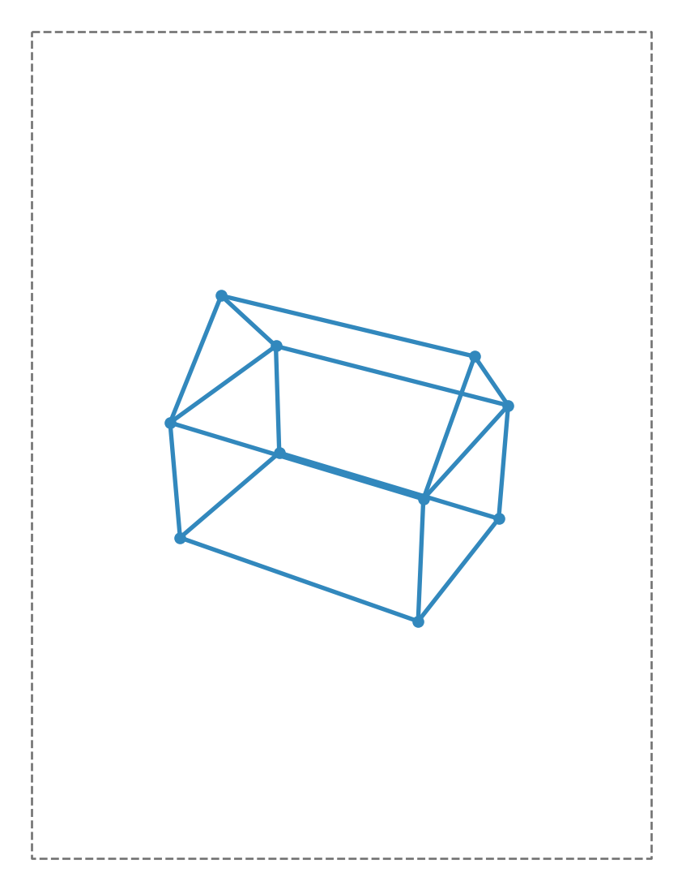
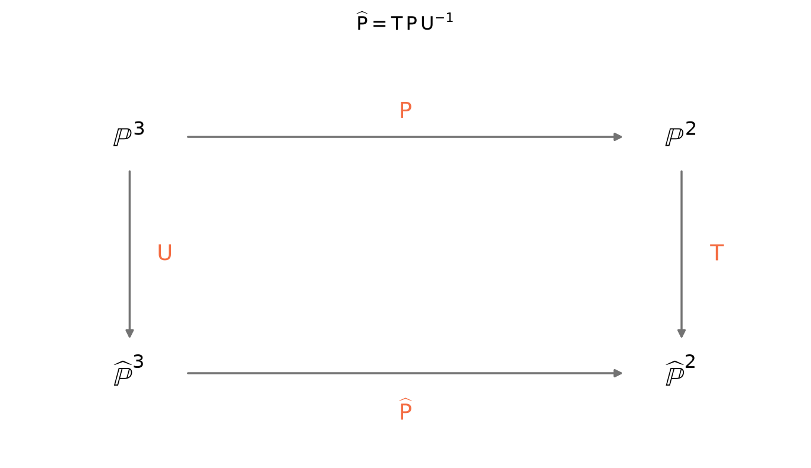
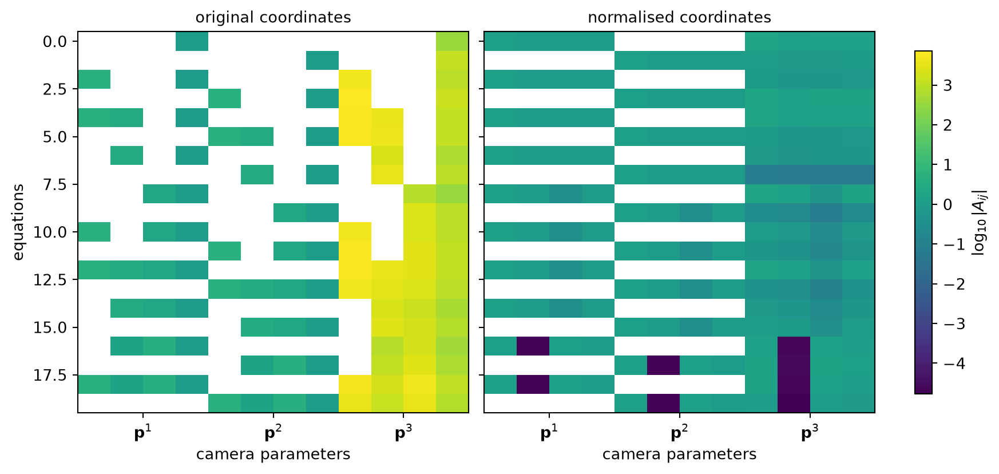
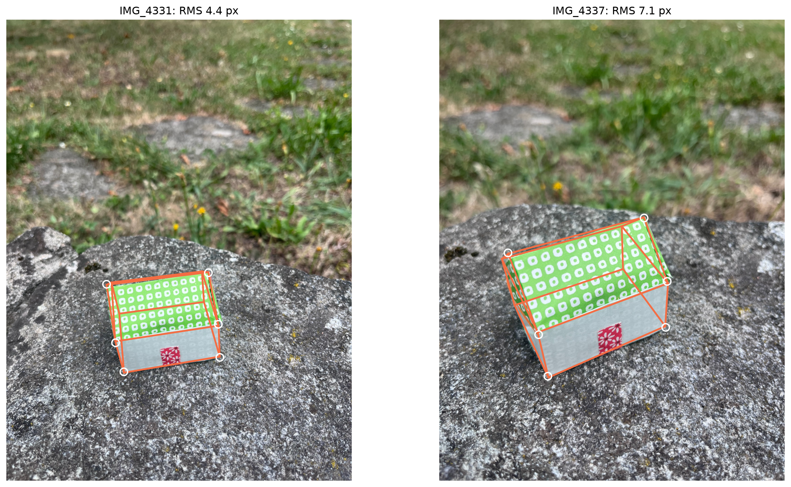
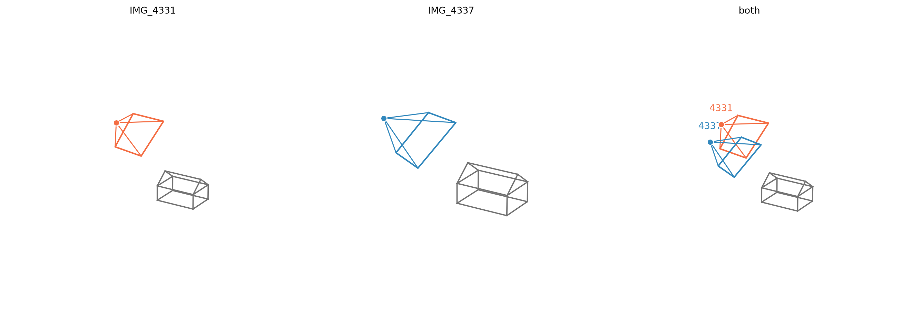
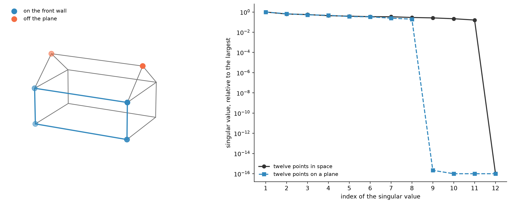
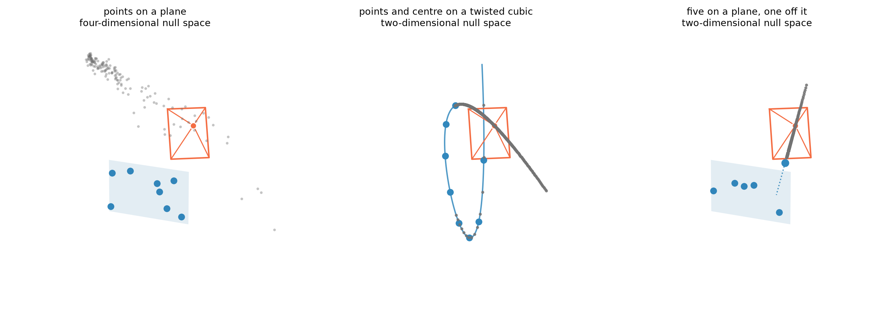

A camera maps 3D points to image points. Camera resection asks the inverse question: if the 3D scene is known and some of its points have been identified in a photograph, can we recover the camera that produced it?
This is camera resection, or exterior orientation in photogrammetry. It is the counterpart of intersection: intersection recovers a 3D point from known cameras; resection recovers a camera from known 3D points.
Let’s recall the notation. A point in space is written in homogeneous coordinates as
\[
\mathbf X=(X,Y,Z,1)^\top,
\]
and its image as
\[
\mathbf x=(u,v,1)^\top.
\]
A projective camera is represented by a \(3\times4\) matrix \(\mathsf P\) satisfying
\[
\mathbf x \sim \mathsf P\mathbf X,
\]
where \(\sim\) means equal up to a non-zero scale. Given \(n\) correspondences
\[
\mathbf X_i \leftrightarrow \mathbf x_i,
\]
our task is to estimate \(\mathsf P\).
We will first solve the problem with the direct linear transform (DLT) on synthetic data, where the true camera is known, and then apply the same method to photographs of the origami house. Along the way we will see why coordinate normalization matters, how the linear estimate can be refined using reprojection error, and which 3D configurations fail to determine a unique camera.
A synthetic image
Before turning to a real photograph, let’s start with a controlled synthetic case.
We already know the 3D coordinates of the ideal origami house. Choose a camera \(\mathsf P_{\mathrm{syn}}\) and use it to project the house vertices into an image,
to obtain the synthetic 3D–2D correspondences that will serve as input to the resection problem.
# Where the camera is?# Place the synthetic camera away from the house.# Its position is expressed in the same 3D coordinate system as the house.house_centre = X_ALL.mean(axis=0)C_syn = house_centre + np.array([9.0, -16.0, 11.0])# Where the camera looks?def look_at(centre, target, up=np.array([0.0, 0.0, 1.0])):"""Build a rotation for a camera located at `centre` and looking at `target`."""# Camera z-axis: viewing direction. z = np.asarray(target, float) - np.asarray(centre, float) z /= np.linalg.norm(z)# Camera x-axis: perpendicular to the viewing direction and world vertical. x = np.cross(z, up) x /= np.linalg.norm(x)# Camera y-axis completes the orthonormal frame.# With this convention it points downwards in the image. y = np.cross(z, x)return np.vstack([x, y, z])R_syn = look_at(C_syn, house_centre)# What are the intrinsics?# Choose simple intrinsics: square pixels, no skew,# and the principal point at the centre of the image.def K_matrix(f, cx, cy):return np.array([ [f, 0.0, cx], [0.0, f, cy], [0.0, 0.0, 1.0], ])K_syn = K_matrix(2900.0, W_PIX /2, H_PIX /2)# We can assemble the camera projection matrix:## P = K [ R | -RC ].## C_syn is the camera centre in world coordinates;# R_syn expresses world points in the camera coordinate frame.P_syn = K_syn @ np.c_[R_syn, -R_syn @ C_syn]def project(P, pts):"""Project 3D points and return ordinary image coordinates.""" q = (P @ np.c_[pts, np.ones(len(pts))].T).Treturn q[:, :2] / q[:, 2, None]# These image points are the synthetic measurements that will# be the input of the resection algorithm.x_syn = project(P_syn, X_ALL)print("the synthetic camera stands at", np.round(C_syn, 2), "cm")print("and its picture of the house spans", np.round(np.ptp(x_syn, axis=0)).astype(int),f"px inside a {W_PIX} x {H_PIX} frame",)
the synthetic camera stands at [ 11.5 -14.23 12.85] cm
and its picture of the house spans [839 806] px inside a 1536 x 2048 frame

Figure 1: The synthetic photograph. Ten vertices, projected by a camera whose position, orientation and focal length we chose ourselves; this and the metric model are the only inputs the estimator gets.
From one correspondence to two equations
A single 3D–2D correspondence satisfies
\[
\mathbf x_i \sim \mathsf P \mathbf X_i.
\]
More explicitly, there exists a non-zero scalar \(\lambda_i\) such that
\[
\mathsf P \mathbf X_i = \lambda_i \mathbf x_i.
\]
Instead of dealing with such scale factors for every correspondence we can eliminate them. Two homogeneous vectors represent the same image point precisely when they are parallel, hence
For each 3D–2D correspondence we now have two linear equations in the twelve entries of the camera matrix. The following function simply writes those two rows for every correspondence and stacks them into a single matrix \(\mathsf A\).
def camera_design_matrix(pts, xy):"""Build the 2n x 12 design matrix A for camera resection.""" Q = np.c_[np.asarray(pts, float), np.ones(len(pts))] # homogeneous X_i xy = np.asarray(xy, float) A = np.zeros((2*len(Q), 12))for i, (Xi, (u, v)) inenumerate(zip(Q, xy)): A[2*i] = np.r_[Xi, np.zeros(4), -u * Xi] A[2*i +1] = np.r_[np.zeros(4), Xi, -v * Xi]return A
At this point the geometry has been converted into a linear algebra problem.
There is one important detail: this is a homogeneous system. The zero vector would of course satisfy it, but it does not represent a valid camera that must have rank 3. What we want is a non-zero vector solution \(\mathbf p\), and we only need it up to scale because
\[
\mathsf P
\quad\text{and}\quad
\alpha\mathsf P,
\qquad \alpha\neq0,
\]
represent the same projective camera.
With exact correspondences in general position, \(\mathsf A\) has rank \(11\). Its null space is therefore one-dimensional, and any non-zero vector spanning that null space gives the camera matrix up to scale.
With noisy measurements there is generally no exact null vector. We therefore look for the solution that comes closest:
The unit-norm constraint simply fixes the otherwise arbitrary scale and rules out the trivial solution \(\mathbf p=\mathbf 0\). The solution is the right singular vector of \(\mathsf A\) associated with its smallest singular value.
This is the direct linear transform, or DLT.
def dlt_camera(pts, xy):"""Estimate the camera matrix from n >= 6 3D--2D correspondences.""" A = camera_design_matrix(pts, xy)# The solution of min ||A p|| subject to ||p|| = 1# is the right singular vector associated with the smallest singular value. _, _, Vt = np.linalg.svd(A) p = Vt[-1] P = p.reshape(3, 4)# Choose one representative of the projective camera P ~ alpha P.return P / np.linalg.norm(P)A_syn = camera_design_matrix(X_ALL, x_syn)P_hat = dlt_camera(X_ALL, x_syn)print(f"A has shape {A_syn.shape} "f"and rank {np.linalg.matrix_rank(A_syn)}.")print(f"largest reprojection error: "f"{reprojection_error(P_hat, X_ALL, x_syn).max():.2e} px")
A has shape (20, 12) and rank 11.
largest reprojection error: 4.26e-10 px
For our exact synthetic correspondences, \(\mathsf A\) has rank \(11\), so its null space is one-dimensional, exactly as expected. The recovered matrix reprojects the points essentially to machine precision.
Where does the name come from?
The DLT was introduced by Y. I. Abdel-Aziz and H. M. Karara in 1971, in close-range photogrammetry. Their problem already looks remarkably familiar: given the known 3D coordinates of control points and their measured 2D positions in a photograph, estimate the camera that relates them.
Direct meant estimating this 3D-to-2D mapping in one step, rather than first recovering several intermediate photogrammetric calibration and orientation parameters. Linear meant that the unknown coefficients could be obtained from linear equations. In modern computer-vision notation, these coefficients are the entries of the projective camera matrix \(\mathsf P\), determined up to scale.
How many correspondences?
We can now count the number of 2D-3D correspondences needed to get the perspective camera matrix.
A \(3\times4\) camera matrix has twelve entries, but its global scale is irrelevant:
\[
12-1=11
\qquad\text{degrees of freedom.}
\]
Each 3D–2D correspondence contributes two independent linear constraints, so
\[
2n\geq11.
\]
Thus at least
\[
n=6
\]
complete correspondences are required.
All of this assumes that the correspondences are in general position. In particular, points lying on a single plane cannot determine a general \(3\times4\) camera matrix.
There is no additional rank constraint to enforce here. A non-degenerate projective camera is simply a \(3\times4\) matrix of rank three, and a generic DLT estimate already has rank three.
This is different from, for example, the fundamental matrix, whose rank-two constraint must be explicitly restored after a linear estimate.
At this stage we are making no Euclidean assumptions about the camera: we do not require a calibration matrix \(\mathsf K\), an orthogonal rotation \(\mathsf R\), or a decomposition of \(\mathsf P\). We have recovered a projective camera.
There is, however, one geometric object that can be read directly from any projective camera: its camera centre.
def camera_centre(P):"""Return the finite camera centre in 3D coordinates.""" _, _, Vt = np.linalg.svd(np.asarray(P, float))# The last right singular vector spans null(P). C = Vt[-1]# Convert the homogeneous point C ~ (X, Y, Z, W) to Euclidean coordinates.return C[:3] / C[3]C_hat = camera_centre(P_hat)print("true camera centre: ", np.round(C_syn, 6), "cm")print("recovered camera centre:", np.round(C_hat, 6), "cm")print(f"error on the camera centre: "f"{np.linalg.norm(C_hat - C_syn):.2e} cm")
true camera centre: [ 11.5 -14.2322 12.8536] cm
recovered camera centre: [ 11.5 -14.2322 12.8536] cm
error on the camera centre: 1.49e-11 cm
This closes the synthetic experiment. We started from a camera centre \(\mathbf C_{\mathrm{syn}}\), used it to manufacture image measurements, then discarded the camera. From the 3D–2D correspondences alone, the DLT recovered a projective camera whose null space brings us back to the original viewpoint.
From a projective matrix to a camera
The DLT treated \(\mathsf P\) simply as a projective \(3\times4\) matrix. It did not exploit during the estimation of \(\mathsf P\) any structure on its entries involving the calibration matrix, or the rotation.
But the coordinates used in our synthetic experiment were not arbitrary projective coordinates: the house was described in a Euclidean 3D reference frame, and its image points were expressed in pixel coordinates. We can therefore ask for the usual Euclidean interpretation of the recovered camera.
Write
\[
\mathsf P
=
\begin{bmatrix}
\mathsf M & \mathbf p_4
\end{bmatrix},
\]
where \(\mathsf M\) is the left \(3\times3\) block. For a finite perspective camera,
\[
\mathsf P
=
\mathsf K
\begin{bmatrix}
\mathsf R & \mathbf t
\end{bmatrix},
\]
so in particular
\[
\mathsf M = \mathsf K\mathsf R.
\]
Here \(\mathsf K\) is upper triangular and contains the intrinsic parameters, while \(\mathsf R\) is a rotation. This is exactly the structure produced by an RQ decomposition of \(\mathsf M\):
\[
\mathsf M = \mathsf K\mathsf R.
\]
The factorization is not quite unique: signs can be moved between \(\mathsf K\) and \(\mathsf R\), and the whole camera is still defined only up to scale. We therefore choose the usual convention of a positive diagonal for \(\mathsf K\), enforce \(\det\mathsf R=+1\), and normalize \(\mathsf K_{33}=1\).
Once \(\mathsf K\) is known, the last column of \(\mathsf P\) gives the translation,
\[
\mathbf t
=
\mathsf K^{-1}\mathbf p_4.
\]
def rq3(A):"""Factor A = K R, with K upper triangular and R orthogonal.""" Q, R = np.linalg.qr(np.flipud(np.asarray(A, float)).T) K = np.fliplr(np.flipud(R.T)) R = np.flipud(Q.T)return K, Rdef decompose_camera(P):"""Decompose a finite camera as P ~ K [R | t].""" P = np.asarray(P, float).copy()# Choose the global sign so that the left 3x3 block# can have a positive-determinant calibration matrix.if np.linalg.det(P[:, :3]) <0: P =-P K, R = rq3(P[:, :3])# Move signs from K into R so that diag(K) is positive. D = np.diag(np.where(np.diag(K) <0, -1.0, 1.0)) K = K @ D R = D @ R# Fix the remaining projective scale by setting K[2,2] = 1. scale = K[2, 2] K = K / scale P = P / scale t = np.linalg.solve(K, P[:, 3])return K, R, tK_rec, R_rec, t_rec = decompose_camera(P_hat)print("K recovered:\n", K_rec)print(f"\nlargest deviation from the synthetic K: "f"{np.abs(K_rec - K_syn).max():.2e}")print(f"largest deviation from the synthetic R: "f"{np.abs(R_rec - R_syn).max():.2e}")
K recovered:
[[2900. -0. 768.]
[ 0. 2900. 1024.]
[ 0. 0. 1.]]
largest deviation from the synthetic K: 3.41e-09
largest deviation from the synthetic R: 3.93e-13
Normalising the coordinates
Before adding noise, it is worth looking at the linear system itself. The non-zero entries of \(\mathsf A\) do not all have the same numerical scale.
The design matrix depends on the coordinate systems in which the points are expressed. In our example, the 3D coordinates of the house are a few units across, while the image coordinates are measured in thousands of pixels. Consequently, terms such as \(u_i\mathbf X_i\) and \(v_i\mathbf X_i\) can be much larger than the coordinates \(\mathbf X_i\) that appear in the other columns of \(\mathsf A\).
This does not change the projective geometry, but it can make the linear system unnecessarily sensitive to numerical errors.
A standard remedy is to change coordinates before building the system. Let
We estimate \(\widehat{\mathsf P}\) from the normalized correspondences and then return to the original coordinates with
\[
\mathsf P
=
\mathsf T^{-1}\widehat{\mathsf P}\,\mathsf U.
\]
The two normalizations act in different spaces: \(\mathsf U\) is a \(4\times4\) transformation of the 3D world coordinates, whereas \(\mathsf T\) is a \(3\times3\) transformation of the image coordinates.

Figure 2: Normalisation as a change of coordinates. The camera is estimated along the bottom edge, where the numbers are well behaved, and carried back to pixels and centimetres along the sides.
We use the standard isotropic normalization: translate each point set so that its centroid is at the origin, then rescale it so that the mean distance from the origin is \(\sqrt{2}\) in the image and \(\sqrt{3}\) in space.
def normalise_2d(xy):"""Centroid at the origin, mean distance equal to sqrt(2).""" xy = np.asarray(xy, float) c = xy.mean(axis=0) s = np.sqrt(2) / np.linalg.norm(xy - c, axis=1).mean() T = np.array([ [s, 0, -s * c[0]], [0, s, -s * c[1]], [0, 0, 1.0], ])return (xy - c) * s, Tdef normalise_3d(pts):"""Centroid at the origin, mean distance equal to sqrt(3).""" pts = np.asarray(pts, float) c = pts.mean(axis=0) s = np.sqrt(3) / np.linalg.norm(pts - c, axis=1).mean() U = np.array([ [s, 0, 0, -s * c[0]], [0, s, 0, -s * c[1]], [0, 0, s, -s * c[2]], [0, 0, 0, 1.0], ])return (pts - c) * s, Udef resection(pts, xy):"""Normalized DLT, carried back to the original coordinates.""" Xn, U = normalise_3d(pts) xn, T = normalise_2d(xy) Pn = dlt_camera(Xn, xn) P = np.linalg.inv(T) @ Pn @ Ureturn P / np.linalg.norm(P)
The geometry has not changed: we have only changed coordinates before solving the linear system. What does change is its numerical scale.
To see this, we can move the origin of the world farther and farther away from the house. This describes exactly the same scene in increasingly inconvenient coordinates.
def conditioning(A):"""Spread of the singular values that are not forced to vanish.""" s = np.linalg.svd(A, compute_uv=False)return s[0] / s[-2]print(f"{'world offset':>14s}"f"{'raw system':>14s}"f"{'normalised':>14s}"f"{'error, raw':>16s}"f"{'error, normalised':>20s}")for offset in [0.0, 1e2, 1e4, 1e6]: Xs = X_ALL + offset C_expected = C_syn + offset Xn, _ = normalise_3d(Xs) xn, _ = normalise_2d(x_syn) e_raw = np.linalg.norm(camera_centre(dlt_camera(Xs, x_syn)) - C_expected) e_norm = np.linalg.norm(camera_centre(resection(Xs, x_syn)) - C_expected)print(f"{offset:14.0e}"f"{conditioning(camera_design_matrix(Xs, x_syn)):14.1e}"f"{conditioning(camera_design_matrix(Xn, xn)):14.1e}"f"{e_raw:16.2e}"f"{e_norm:20.2e}" )
world offset raw system normalised error, raw error, normalised
0e+00 2.1e+04 3.8e+00 1.49e-11 7.26e-14
1e+02 9.3e+07 3.8e+00 2.07e-09 2.43e-12
1e+04 9.0e+11 3.8e+00 2.02e-07 8.54e-09
1e+06 9.0e+15 3.8e+00 1.95e-03 2.54e-04

Figure 3: Orders of magnitude of the non-zero entries of the design matrix, before and after normalisation. The block structure is identical; only the numerical scale changes.
The block structure is unchanged, as it should be: normalization does not change the DLT equations, it changes just their numerical scale.
In the original coordinates, terms involving image coordinates, such as \(u_i\mathbf X_i\) and \(v_i\mathbf X_i\), can be much larger than the other entries of \(\mathsf A\). After normalization, the non-zero coefficients are brought to more comparable scales.
The heatmap gives a visual indication of this balancing. The singular values make the effect quantitative: as the world coordinates become poorly scaled, the conditioning of the unnormalised system deteriorates, while the normalised system remains much more stable.
In this synthetic example the recovered camera itself changes very little. The main role of normalization is therefore numerical: it reduces the dependence of the linear estimate on the particular coordinate systems in which the problem is expressed.
Are six points always enough?
Six correspondences are sufficient to determine a projective camera in general position. That is a statement about uniqueness with exact data, not about accuracy in the presence of noise.
We can test the difference while the true camera is still known. Add a few pixels of noise to the image measurements, estimate the camera from subsets of increasing size, and ask two questions:
how accurately is the camera centre recovered?
how well does the estimated camera predict the noise-free image points?
If additional correspondences provide useful redundancy, both errors should decrease as more points are used.
rng = np.random.default_rng(7)def degeneracy(sel):"""Smallest singular value that should not vanish, relative to the largest.""" Xn, _ = normalise_3d(X_ALL[sel]) xn, _ = normalise_2d(x_syn[sel]) s = np.linalg.svd(camera_design_matrix(Xn, xn), compute_uv=False)return s[-2] / s[0]USABLE =1e-8# below this value the configuration is critical, not merely awkwardnoise_sigma =3.0n_trials =300print(f"{'points':>8s}"f"{'equations':>12s}"f"{'RMS on all vertices':>22s}"f"{'centre error':>18s}")for k inrange(6, len(X_ALL) +1): image_errors = [] centre_errors = []whilelen(centre_errors) < n_trials: sel = rng.choice(len(X_ALL), k, replace=False)if degeneracy(sel) < USABLE:continue x_noisy = x_syn + rng.normal(0.0, noise_sigma, x_syn.shape) P = resection(X_ALL[sel], x_noisy[sel]) image_errors.append(rms(reprojection_error(P, X_ALL, x_syn))) centre_errors.append(np.linalg.norm(camera_centre(P) - C_syn))print(f"{k:8d}"f"{2*k:12d}"f"{np.median(image_errors):19.2f} px"f"{np.median(centre_errors):15.2f} cm" )
points equations RMS on all vertices centre error
6 12 6.99 px 1.58 cm
7 14 4.75 px 1.13 cm
8 16 3.78 px 0.85 cm
9 18 3.41 px 0.73 cm
10 20 3.10 px 0.66 cm
The distinction between minimal and well constrained is now visible. Six points determine the camera, but leave almost no redundancy with which to average measurement noise. Adding correspondences does not change the model: it only gives the same eleven camera degrees of freedom more evidence.
This is why practical resection is normally solved from more than the minimum number of correspondences whenever they are available.
On real images
Let us now try the DLT on real photographs.
For each image, the house corners have been annotated by hand, giving us the 2D image measurements \(\mathbf x_i\). Their corresponding 3D coordinates \(\mathbf X_i\) come from the ideal metric model of the origami house.
Unlike the synthetic experiment, neither side of these correspondences is exact.
The image points are affected by annotation noise: a corner can only be located to within a few pixels. But the 3D model is approximate as well. It describes the nominal geometry of the folded house, not a careful metrological measurement of the particular paper model in the photograph. Small folding errors, bends, and deformations therefore appear as errors in the 3D points.
We should therefore not expect an exact camera. The question is instead how well a single projective matrix can explain these imperfect 3D–2D correspondences.
matches = [ m for m in load_annotation("two_view_matches")["matches"]if m["id"] in V3]ids = [m["id"] for m in matches]X = np.array([V3[i] for i in ids], float)x1 = np.array([m["x"] for m in matches], float)x2 = np.array([m["xp"] for m in matches], float)I1 = load_image("IMG_4331.jpeg")I2 = load_image("IMG_4337.jpeg")views = [ ("IMG_4331", I1, x1), ("IMG_4337", I2, x2),]print(f"using {len(ids)} annotated vertices:", ", ".join(ids))P1 = resection(X, x1)P2 = resection(X, x2)for (name, _, x), P inzip(views, [P1, P2]): e = reprojection_error(P, X, x) C = camera_centre(P)print(f"\n{name}")print(f" RMS reprojection error: {rms(e):.2f} px")print(f" largest error: {e.max():.2f} px")print(f" estimated camera centre: {np.round(C, 2)} cm")
using 6 annotated vertices: X0, X1, X4, X5, X8, X9
IMG_4331
RMS reprojection error: 4.42 px
largest error: 6.36 px
estimated camera centre: [ 2.15 -11.97 18.98] cm
IMG_4337
RMS reprojection error: 7.07 px
largest error: 10.80 px
estimated camera centre: [-1.55 -8.66 13.76] cm

Figure 4: The recovered cameras reproject the nominal 3D house onto the two photographs. White circles mark the image points used for resection.
The reprojected wireframes follow the house reasonably well, with residuals of a few pixels. To see what the two recovered cameras mean geometrically, let us place them in the 3D scene at their estimated centres and with their recovered orientations.

Figure 5: The two recovered viewpoints. Left and centre: each photograph on its own. Right: both together, which is the pair of positions the two-view notebooks call a baseline — recovered here one camera at a time, from the model alone.
The recovered viewpoints agree with what the photographs suggest: one is higher and farther back, while the other is lower and turned towards the gable.
This is an algebraic error: it measures how well the entries of \(\mathbf p\) satisfy the homogeneous linear equations. Its main advantage is precisely that it leads to a linear solution.
What we ultimately care about, however, is what happens in the image. Let
Here the observed image points \(\mathbf x_i\) and the 3D points \(\mathbf X_i\) are held fixed; only the camera is varied. The problem is no longer linear because of the division by the third coordinate in \(\pi\).
Unlike the algebraic residual, the reprojection error has a direct unit and interpretation: pixels. Under the usual model in which the 3D points are exact and the image measurements are affected by isotropic Gaussian noise, minimizing squared reprojection error is also the natural statistical objective.
There is no closed-form solution in general. A common strategy is therefore to use the DLT estimate as an initial camera and refine it with a nonlinear least-squares method.
A small technicality remains. Reprojection is unchanged if we replace \(\mathsf P\) by \(\alpha\mathsf P\), so the nonlinear problem still has the same projective scale ambiguity.
To remove it, we scale the initial camera so that one of its entries is equal to one, keep that entry fixed, and optimize the remaining eleven parameters. The DLT estimate provides the starting point.
from scipy.optimize import least_squaresdef refine_camera(P0, pts, xy):"""Refine a projective camera by minimising reprojection error.""" P0 = np.asarray(P0, float)# Fix the projective scale using the largest entry of the DLT estimate. fixed = np.argmax(np.abs(P0)) P0 = P0 / P0.flat[fixed] free = np.ones(12, dtype=bool) free[fixed] =Falsedef unpack(theta): p = np.empty(12) p[fixed] =1.0 p[free] = thetareturn p.reshape(3, 4)def residuals(theta): P = unpack(theta)return (project(P, pts) - xy).ravel() result = least_squares( residuals, P0.ravel()[free], )return unpack(result.x)
While the DLT found a projective camera by minimising an algebraic residual, nonlinear least squares instead starts from that estimate and moves the same eleven projective degrees of freedom to reduce reprojection error directly.
On the real house, a smaller reprojection error should not be interpreted as recovering a physically exact camera: the image annotations are noisy and the 3D model itself is only nominal.
When the points are coplanar
There was one qualification in the six-point count: the 3D points must be in general position. The most important failure case is when they all lie on a plane.
Take, for example, the front wall of the house, \(Y=0\). A point on that plane has coordinates
The column \(\mathbf p_2\) has disappeared completely. No number of observations on this plane can tell us how the camera acts in the direction away from it.
What the correspondences determine instead is the plane-to-image homography
Thus planar correspondences can determine how that particular plane appears in the image, but they cannot determine a unique projective camera in 3D.
For sufficiently many generic points on the plane, the homography has eight degrees of freedom. The remaining camera column contributes three completely unconstrained parameters. Accordingly, the \(12\) camera coefficients are constrained only up to a four-dimensional null space, and the design matrix has rank at most \(8\).
There is one small trap when trying to demonstrate this numerically. With only four points, any \(8\times12\) design matrix has a null space of dimension at least four simply by counting, whether the points are planar or not. To expose the degeneracy we must use enough correspondences that a non-coplanar configuration would determine the camera, at least six.
rng = np.random.default_rng(0)def sample_on_wall(n):"""Points on the front wall Y = 0 of the house.""" lo, hi = X_ALL.min(axis=0), X_ALL.max(axis=0)return np.c_[ rng.uniform(lo[0], hi[0], n), np.zeros(n), rng.uniform(lo[2], hi[2], n), ]def sample_in_space(n):"""Points inside the bounding box of the house.""" lo, hi = X_ALL.min(axis=0), X_ALL.max(axis=0)return rng.uniform(lo, hi, size=(n, 3))def camera_rank(pts): xy = project(P_syn, pts) Xn, _ = normalise_3d(pts) xn, _ = normalise_2d(xy)return np.linalg.matrix_rank(camera_design_matrix(Xn, xn), tol=1e-9)print(f"{'points':>8s}{'planar rank':>15s}{'spatial rank':>15s}")for n in [4, 6, 8, 12, 30]: rp = camera_rank(sample_on_wall(n)) rs = camera_rank(sample_in_space(n))print(f"{n:8d}{rp:15d}{rs:15d}")
Once enough points are available, the difference is unambiguous. Points spread through space give the expected rank \(11\), while points confined to one plane stop at rank \(8\): three additional camera parameters remain completely unobservable.

Figure 6: A planar configuration cannot determine a general projective camera. Left: among the annotated house corners, four lie on the front wall while the others provide information away from that plane. Right: singular values of the normalized DLT system for twelve points spread through space and twelve points confined to a plane. The generic 3D configuration has one null direction, corresponding to the global scale of the camera; the planar configuration has four.
The difference is also visible in the singular values of the design matrix. With exact generic 3D points, only one singular value vanishes: the camera is determined up to its global scale. With planar points, four singular values vanish, leaving a four-dimensional null space.
The extra three null directions are exactly the three coefficients of the camera column that never appears when all points lie on the plane. What the data determine is only the plane-to-image homography.
Beyond coplanarity: the twisted cubic
Coplanarity is the most familiar degeneracy in camera resection, but it is not the only one.
A classical critical configuration occurs when the 3D points and the camera centre lie on the same twisted cubic. In projective coordinates, such a curve can be written as
\[
\Gamma(t)
\sim
\mathsf A
\begin{bmatrix}
1 & t & t^2 & t^3
\end{bmatrix}^{\mathsf T},
\]
for some invertible \(4\times4\) matrix \(\mathsf A\).
For points on such a configuration, the image correspondences do not determine a unique projective camera. Instead of the usual one-dimensional null space corresponding only to global scale, the DLT system has an additional null direction. Projectively, this gives a one-parameter family of cameras that reproject the same data exactly.
There are also reducible critical cubics. One simple case is already visible from the planar degeneracy discussed above. Points confined to a plane can constrain the design matrix only up to rank eight. If five generic points lie on that plane, adding a sixth point outside it contributes at most two further independent equations:
\[
8+2=10.
\]
The camera therefore remains underdetermined: a minimal six-point set with five coplanar points is degenerate even though the six points together span \(\mathbb P^3\).
This is a useful warning about the phrase general position. Merely checking that the 3D points are not all coplanar is not enough to guarantee a valid minimal resection configuration.

Figure 7: Three critical configurations for projective camera resection. Grey points show the centres of different cameras that reproject the data exactly. Left: when all control points lie on a plane, the design matrix has nullity four; after accounting for global scale, three degrees of camera ambiguity remain, and the possible centres fill a three-dimensional set. Centre: when the points and the camera centre lie on a twisted cubic, the nullity is two and the resulting one-parameter family of camera centres lies on the same cubic. Right: with five coplanar points and one point off the plane, the nullity is again two; the ambiguous centres lie on the line through the original camera centre and the off-plane point.
The three cases differ in how much freedom remains after the image correspondences have been fixed.
For points on the plane \(Y=0\), the column \(\mathbf p_2\) of the camera never appears in the projection equations. It can therefore be changed by an arbitrary three-vector without affecting any image point. This gives the four-dimensional null space seen above: one dimension is the usual global scale of \(\mathsf P\), while the other three correspond to genuine camera ambiguity.
Adding one point \(\mathbf X_6\) away from the plane removes two of those three degrees of freedom. One ambiguity remains. If
produces exactly the same image measurements. For every planar point, \(\mathbf e_2^\top\mathbf X=Y=0\), so its projection is unchanged. For the sixth point,
The corresponding camera centres lie on the projective line through the original centre \(\mathbf C\) and the off-plane point \(\mathbf X_6\). Thus the remaining one-parameter ambiguity has a simple geometric form: the viewpoint can move along that line without changing any of the six image measurements.
The twisted-cubic case has the same nullity, but a different geometry. The one-parameter family of ambiguous camera centres is no longer a line: it lies on the twisted cubic containing the control points and the original camera centre.
In all three cases the reprojection error is exactly zero. The ambiguity is therefore not caused by noise or by the estimation algorithm: the image data themselves do not determine a unique camera.
The last two configurations have the same algebraic nullity, but not the same geometry: in one case the ambiguous centres trace a cubic, in the other a line.
Questions to leave open
Five and a half. The counting suggests that five complete correspondences plus one additional scalar constraint should be enough. Build the system using five image points and only the \(u\) coordinate of a sixth, and check that its null space is generically one-dimensional.
What does that last constraint mean geometrically? Can you rewrite it as saying that the projection of the sixth 3D point must lie on a known image line?
Which six? With ten vertices available there are \(\binom{10}{6}=210\) minimal subsets. Compute the rank of the normalized design matrix for each one. Are all six-point subsets usable?
Among the non-degenerate subsets, use the second-smallest singular value \(\sigma_{11}\) as a measure of distance from degeneracy. Does it predict which subsets are most sensitive to a few pixels of image noise?
Near a critical configuration. On an exact twisted cubic the DLT has a two-dimensional null space. Perturb the 3D points slightly away from the curve and recompute the normalized design matrix.
How does the second-smallest singular value \(\sigma_{11}\) change as the perturbation grows? What happens to the sensitivity of the recovered camera centre to small image noise?
Whose error is it? On the real photographs, reprojection error mixes two effects: uncertainty in the annotated image points and mismatch between the ideal 3D model and the folded paper house.
Can these two sources of error be separated from the images alone? What additional assumptions or measurements would make the problem identifiable?
As a more constrained experiment, allow only a small number of physically meaningful deformations of the house — for example its fold angles — and test whether the resulting model improves reprojection on views that were not used for fitting.
Further reading
Fusiello, A. Elements of Computer Vision. Resection as the DLT one dimension up, and §7.2 on algebraic versus geometric error, which this notebook follows.
Hartley, R. and Zisserman, A. Multiple View Geometry in Computer Vision, 2nd ed., Cambridge University Press, 2004. See Chapter 7 for camera resection and normalization, Chapter 22 for degenerate configurations, and Chapter 6 for camera models and the decomposition of the camera matrix.
Abdel-Aziz, Y. I. and Karara, H. M. “Direct linear transformation from comparator coordinates into object space coordinates in close-range photogrammetry”, Proceedings of the ASP Symposium on Close-Range Photogrammetry, 1971. Where the DLT comes from, and it is photogrammetry rather than computer vision.